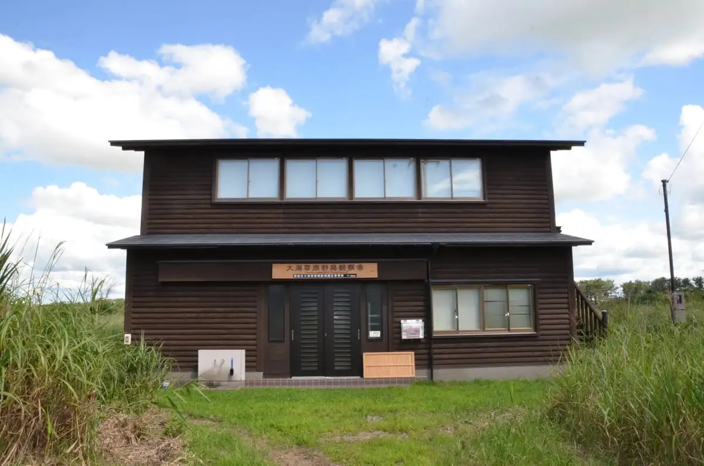
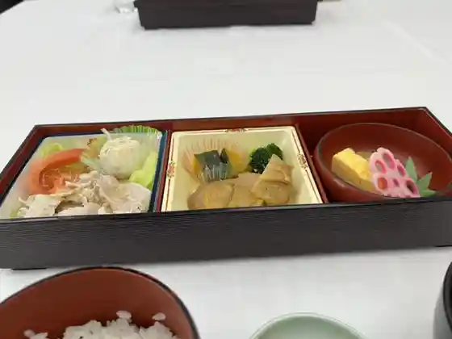
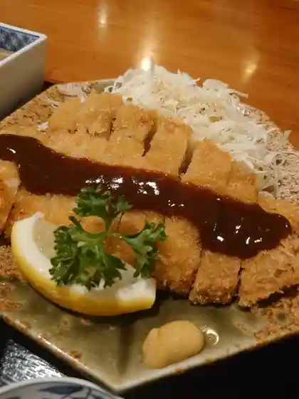
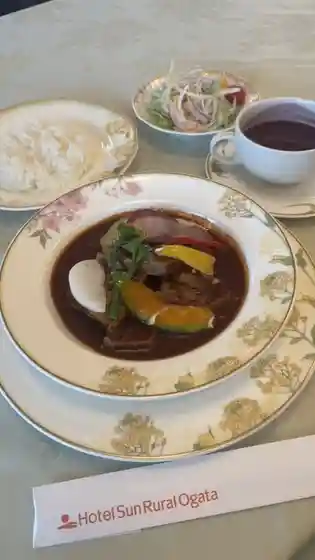
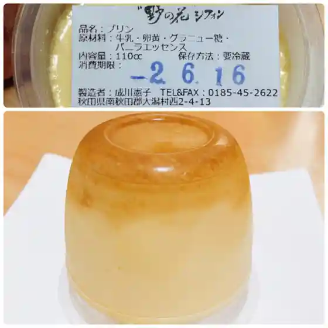
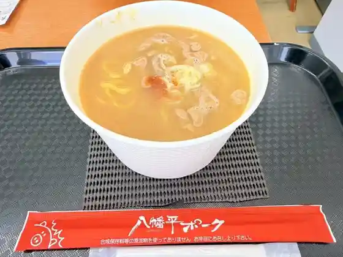
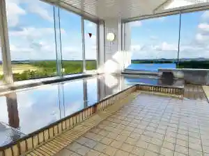

Ogata
Ogata · Akita
Ogata
Highlighted on the Akita map.

Dining
中国四川料理 彗星
中国四川料理 彗星
八幡平ポーク 大潟店
八幡平ポーク 大潟店

ホテルサンルーラル大潟
ホテルサンルーラル大潟
レストラン・フレボラント
レストラン・フレボラント

ファミリーレストラン パンダ
ファミリーレストラン パンダ
道の駅 おおがた 産直センター潟の店
道の駅 おおがた 産直センター潟の店

和洋ダイニング 風車
和洋ダイニング 風車

野の花シフォン
野の花シフォン

食ってく！持ってく！ 八幡平ポーク
食ってく!持ってく! 八幡平ポーク
あぐりプラザおおがた
あぐりプラザおおがた
Flyway
Flyway
Ponte
Ponte
セブンイレブン 秋田大潟店
セブンイレブン 秋田大潟店
Treat Box
Treat Box
LAWSON 大潟村店
LAWSON
ドライフルーツ 10COUNT
10COUNT
野の花シフォン
野の花シフォン
Nonohanashifon
Nonohanashifon
Hotel Sun Rural Ogata Chinese Sichuan Restaurant Comet
Hotel Sun Rural Ogata Chinese Sichuan Restaurant Comet
Moren
Moren
Ameya Coffee Ogata
Ameya Coffee Ogata
Ogata Sushi
Ogata Sushi
Panda
Panda
Stay
ホテルサンルーラル大潟
ホテルサンルーラル大潟

Sights
Ogata Sogen Yacho Kansatsu Sha (Yacho Kansoku Suteshon)
Roadside Station Ogata Sanchoku Center Kata no Mise